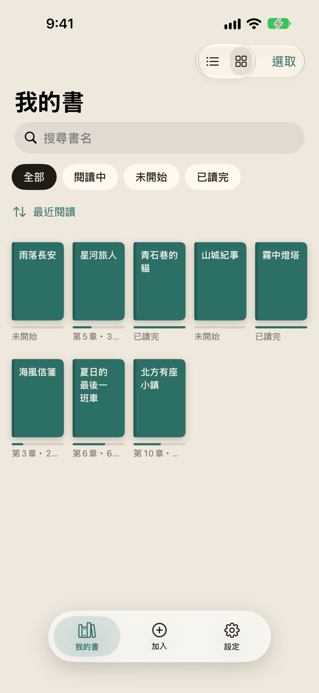
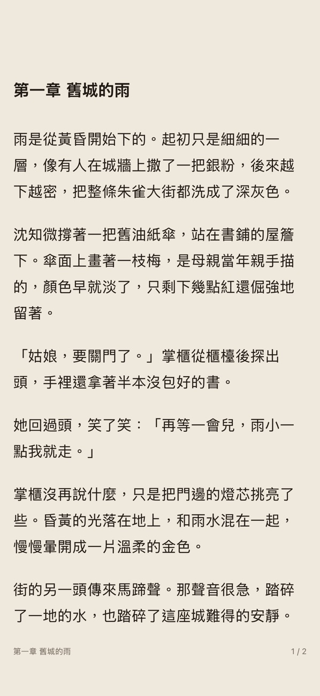
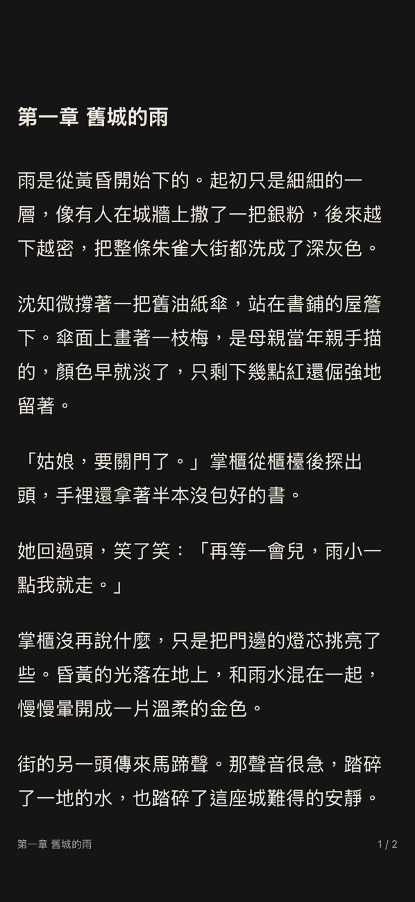

SoftPage 小說閱讀器：EPUB、TXT 匯入就能看
手機裡的 TXT 小說、EPUB 電子書，從「檔案」匯入就自動分好章節，下次打開直接接著讀。沒有廣告、不用註冊，書只存在你的手機。
App Store 免費下載iPhone、iPad（iOS 17 以上）・沒有 Android 版



SoftPage 重點
- 格式
- TXT、EPUB
- 閱讀
- 自動分章、記住讀到哪、搜尋、書籤，可翻頁或上下捲動
- 外觀
- 四種閱讀主題（含深色），字級、行高可調；簡體可轉繁體
- 隱私
- 沒有廣告、不用註冊，書和進度只存在手機，可離線閱讀
- 裝置
- iPhone、iPad，iOS 17 以上
- 費用
- 免費下載；Pro 一次購買、永久使用
SoftPage 怎麼用
匯入一次，之後打開就是你讀到的那一頁。
匯入書
按匯入，從「檔案」App 選 TXT 或 EPUB，iCloud 雲碟、下載項目裡的檔案都可以。
自動分章
SoftPage 會自動辨識章節，從目錄跳到想看的章。
調成順眼的樣子
選閱讀主題、字級和行高，翻頁或上下捲動都可以；簡體小說可以一鍵轉繁體。
接著讀
關掉 App 也會記住讀到哪，下次從書櫃點書就接著看。
看小說需要的都有
專心在字上，沒有多餘的東西。
- 自動章節TXT 小說也能自動分章，目錄一點就跳。
- 搜尋與書籤在整本書裡搜尋文字，重要段落加書籤。
- 閱讀主題四種主題（含深色），晚上看也不刺眼。
- 簡轉繁簡體小說轉成繁體，順便整理排版。
- 翻頁或捲動照習慣選左右翻頁或上下捲動。
費用
下載免費，沒有廣告。免費版書櫃有書數上限；SoftPage Pro 是一次購買、永久使用，不是訂閱：書櫃不限書數、匯出 TXT、備份到你自己的 iCloud。換手機在 App 內按「恢復購買」即可找回。
常見問題
SoftPage 支援哪些格式？
TXT 和 EPUB，從「檔案」App 匯入即可。
有廣告嗎？
沒有。SoftPage 不放廣告，也不用註冊帳號。
我的書會上傳嗎？
不會。書和閱讀進度只存在你的手機；Pro 的 iCloud 備份存在你自己的 iCloud，開發者讀不到。
簡體小說可以轉繁體嗎？
可以，閱讀時開啟簡轉繁即可。
SoftPage 要訂閱嗎？
不用。下載免費，Pro 一次購買、永久使用。
有 Android 版嗎？
目前只有 iPhone、iPad 版（iOS 17 以上）。
H.C 的其他 App
- 快捷鍵盤常用句、顏文字存一次，任何 App 一點就輸入。
- Cleaner 照片清理往上滑刪照片、長影片剪短，空出儲存空間。
- SyncMirror 練舞影片鏡像、慢速、段落循環，跟著影片練舞。